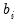
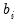

The F-statistics reported in the Chow tests have an
F-distribution only if the errors are independent and identically normally distributed. This restriction implies that the residual variance in the two subsamples must be equal.
The p-value is saved as a scalar named WALD_P. To see the
p-value, double click on WALD_P or type “show wald_p”. The WALD statistic value of 53.1243 has an associated
p-value of 2.9e-12 so that we decisively reject the null hypothesis of no structural change.
The J-test proposed by Davidson and MacKinnon (1993) provides one method of choosing between two non-nested models. The idea is that if one model is the correct model, then the fitted values from the other model should not have explanatory power when estimating that model. For example, to test model

against model

, we first estimate model

and retrieve the fitted values:


distribution with 2 degrees of freedom. Alternatively, you can compute the p-value in EViews using the command:
The p-value is saved as a scalar named WALD_P. To see the p-value, double click on WALD_P or type “show wald_p”. The WALD statistic value of 53.1243 has an associated p-value of 2.9e-12 so that we decisively reject the null hypothesis of no structural change.Note that an alternative form of a regressor endogeneity test may be computed using the Regressor Endogeneity Test view of an equation estimated by TSLS or GMM (see “Regressor Endogeneity Test”).
 as  and
as  and  for . Under the assumption that and are independent normal random variables, the difference has mean zero and variance . Therefore, a Wald statistic for the null hypothesis of no structural change and independent samples can be constructed as:
for . Under the assumption that and are independent normal random variables, the difference has mean zero and variance . Therefore, a Wald statistic for the null hypothesis of no structural change and independent samples can be constructed as: distribution with degrees of freedom equal to the number of estimated parameters in the
distribution with degrees of freedom equal to the number of estimated parameters in the  vector.
vector.  including the fitted values from model . The result is:
including the fitted values from model . The result is: enter significantly in model
enter significantly in model  and we reject model
and we reject model  .
.  against model
against model  . First, estimate model and retrieve the fitted values:
. First, estimate model and retrieve the fitted values: including the fitted values from model
including the fitted values from model  . The results of this “reverse” test regression are given by:
. The results of this “reverse” test regression are given by: .
.